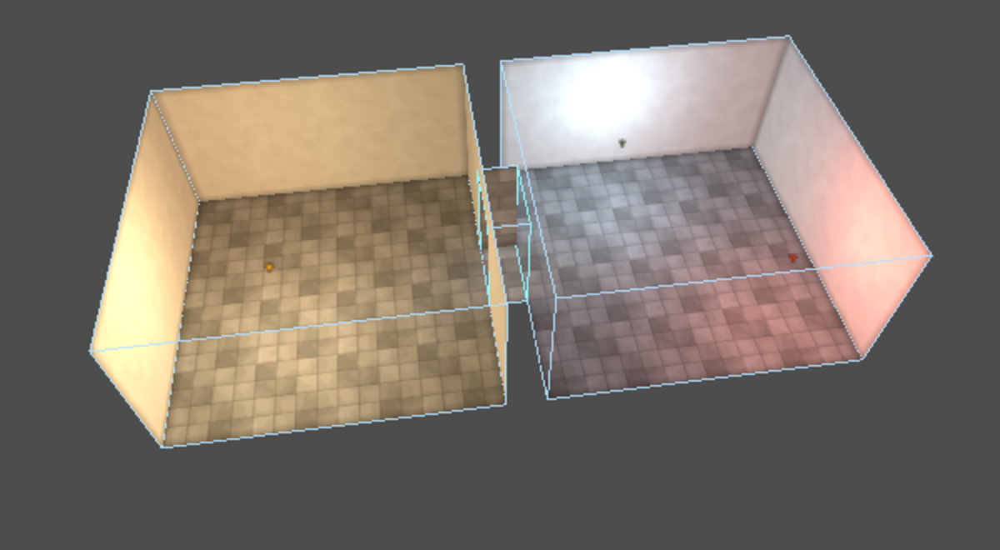
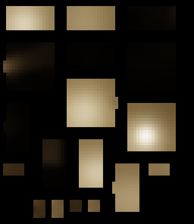
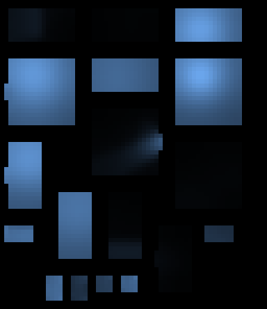
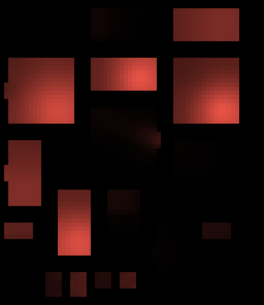
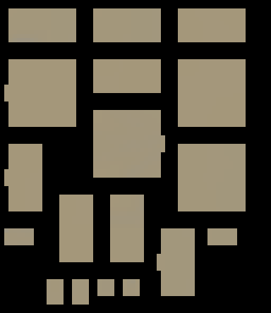

Draft. Not listed on the blog and not indexed.
Hammerite's lightmapper
Hammerite bakes light into lightmaps on the GPU, with bounced light in the style of the classic brush-based games. A stealth game also needs light that can change while the game runs, so every surface can hold four switchable lights next to its static light. This is an overview of how it works.

Why lightmaps
City of Thieves is a stealth game, so light is gameplay. The player hides in shadow, and the guards see them depending on how lit they are. That needs light that looks good, but also light the game can measure, and lamps that can be switched off, flicker or be put out.
Baked light does the first part well: soft bounced light and colour coming off the walls, at no cost at runtime. Real-time lights do the second part, but they are expensive and don't bounce. So Hammerite bakes everything it can, and makes the baked light switchable.
The first version, in 2024, did radiosity on the CPU, and it did not scale. In radiosity every patch of every wall trades light with every other patch it can see, so the work grows a lot faster than the level does. In 2025 I moved the whole bake to the GPU, as compute shaders.
Unwrapping and atlases
First every surface that takes light gets its own lightmap coordinates. Hammerite's walls are flat polygons, so each one is simply projected onto its own plane at a fixed density: by default one lightmap texel per 16 world units on walls, and one per 8 on props. A face can have its own scale where it needs more or less detail.
The projected faces are then packed into atlases with a little padding around each one, so light does not bleed from one face to its neighbour. Faces that share the same lights are packed together, which keeps the number of atlases down.

Direct light and shadows
Each texel becomes a patch, with a reflectance taken from its texture. The direct pass lights every patch from every lamp that can see it. Shadows are rays cast on the GPU through a bounding volume hierarchy of the level's convex brushes, plus a separate one of triangles for props.
Each texel casts up to four shadow rays per light, spread over its area, so shadow edges come out soft instead of stair-stepped. A ray can also pass through up to three surfaces that let light through, such as masked textures, tinted glass or water.
Daylight works the same way. Faces textured as sky are openings, not blockers. A patch is in sunlight when a ray toward the sun reaches a sky face before it hits rock, and every sky face also gives off the sky's own light into the rooms that can see it.

Bounce
Bounced light is what makes the result look like radiosity, and it is also the expensive part. Instead of patches trading light with each other directly, Hammerite relays it through light probes, points placed just off every wall and on a lattice through the air:
- Gather. Each probe collects the light reflected by the patches it can see. Far away patches are clustered together, so a probe does not cast a ray at each one.
- Bounce. The probes pass light between each other, once per bounce.
- Distribute. Every texel reads the light from the eight nearest probes it can see.
Every transfer uses the same form factor, the classic radiosity term for how much of one surface another one sees. I checked the result against the theory: a room with dark walls bounces about 12% of its direct light back into itself, close to the 11% that the walls' reflectance predicts.
The same probes are saved with the map. Anything that moves, like a guard or a carried crate, is lit from the nearest probes, so it gets the same light as the walls around it. The game can also ask how lit a point is, which is what the stealth gameplay reads.
Four light slots
A lightmap is normally a single image. In Hammerite each atlas has two:
- The static texture holds the light that never changes: static lamps, daylight, glowing textures and all of their bounce.
- The slot texture holds up to four switchable lights, one in each of its red, green, blue and alpha channels, each at full strength.

Static

Slot: blue lamp

Slot: red lamp
When the level is drawn, the shader adds the static light to each slot's light times that light's current strength and colour. Turning a lamp off, dimming it or making it flicker only changes one number per light, and nothing is baked again. Lamps can share a slot by being in the same light group, so a chandelier's candles flicker as one and a lightning flash lights every window at once.
Four is the limit per surface. If more than four groups reach a surface, the bake keeps four and warns about it. Lights that are not in view do no work at all, and visible ones update their strength 30 times a second by default, which keeps a level full of flickering lamps cheap.
Colour bleed
Bounced light takes on the colour of what it bounced from, like a red carpet tinting a white ceiling. Storing full colour for every slot would cost a lot of memory, so Hammerite stores colour bleed separately: one tint texture, and a weight per slot for how much of the tint each light gets.

How strong the colour bleed looks is set when the level is drawn, not when it is baked, so it can be tuned without baking again.
Baking while you work
A full bake runs inside the editor, which runs inside the game, so you can look at the result from where you stand. The editor stays responsive during the bake and can cancel it, and the old light is put back if you do.
After an edit, walls that were moved or carved have no light until the next bake. A quick bake lights just those walls with direct light, and leaves everything else as it was. On a large imported level with 736 lamps a quick bake takes about a second.

Numbers
My reference level is large: 7,240 brushes, about 130,000 walls, 4.4 million patches, 54,000 probes and 736 lights. A full bake of it on a GTX 1070 Ti takes about 22 minutes. It used to take over two and a half hours, before the gather clustering and before the atlases were written in native code.
Limits
- A lightmap stores how much light reaches a texel, not where it came from. Normal maps only react to switchable lights, carried lights and probes.
- Baked surfaces have no specular reflections.
- At most four switchable light groups can reach one surface.
- Glowing textures are static. A light that has to move is a real-time light, not a baked one.
- Two bakes of the same level are not bit for bit identical yet. Which of two lights that add nothing to a face gets its last slot can change between runs. The difference is tiny, but I want the bake to be fully reproducible, and I plan to fix it.
The Hammerite docs have more about lighting and baking, including baking from a script in a build pipeline.
- Elli